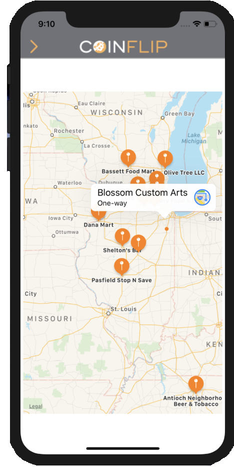
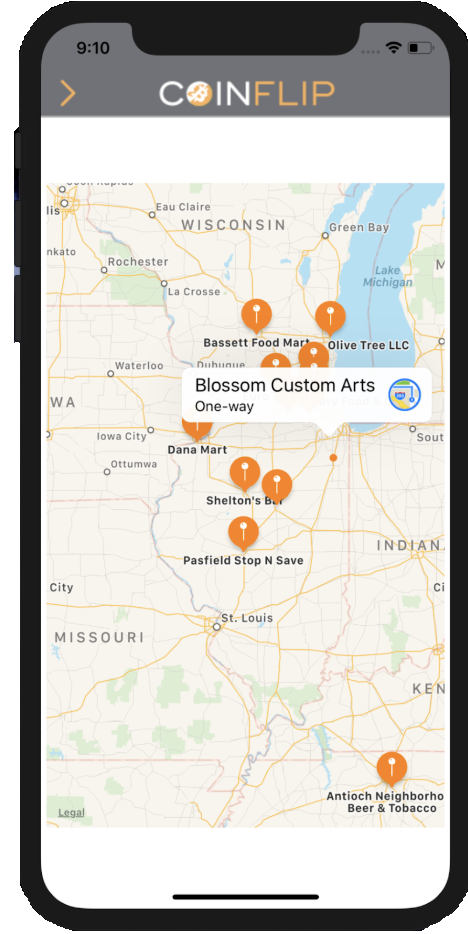

Hello my name is
Kieran
scroll down
About Me
I am currently a senior at Northwestern University studying computer science, expecting to graduate in Spring 2021. My interests in coding stemmed from a love of problem solving games and puzzles as a child. Since then, I have pursued this passion in many different forms, both academically and in my free time. I am interested in many different facets of Computer Science: Blockchain, App Development, Cyber Security, and Orchestration Scripts.
I perform monthly in the Titanic players, a campus improv group. I have been doing improv for over five years, as it is an amazing way to relax and allow me to freely express my creative side. Although not musically gifted, I have an appreciate for music and the communities it creates. My other interests include soccer, hockey, and video games.


Projects
Marion
built using:


Links:
Live WebsiteMarion is a web-based note taking application, currently in development. The project’s mission is to create a workspace that is organized in a human-centered system. With tags and unique mapping functionality, Marion hopes to change how people use their devices to take notes. I have been working as a Full-Stack Software Engineer on this project for six months.
Orchestration Scripts Research
In Spring 2020, I had the pleasure of being a student for Northwestern’s Design, Thinking, and Research (DTR) class. This course allows for students to partake in research opportunities in a classroom setting with PhD student mentors. I began working on Orchestration Scripts research, hoping to understand how to efficiently offer help when research students are stuck. The design arguments for this project are below:
Freedom Link
built using:

Freedom Link was part of my Comp Sci. 394, Agile Software Development, curriculum. As a team, we were assigned a client and tasked with working with them towards a finished product. Our client was Sheila Bedi, a Northwestern Law Professor. We worked together over the course of six weeks to create a product that could help people with incarcerated loved ones appeal their sentences through a user-friendly website.
Distributed Metronome
built using:
Distributed Metronome was part of my Comp Sci. 394, Agile Software Development, curriculum. My team and I brainstormed problems and fixes surrounding the new virtual college environment. I decided to create a platform that syncs simultaneous live performances to stream on Twitch. My goal is to create a web application that university groups could use to create live performance experiences, similar to the ones they had on campus.
The Harbor
built using:
Website:
LinkThe Harbor is a web database for free teaching assets. The goal is to create a resource for teacher to find and share lesson plans, resources, worksheets, and much more, for free. The privatization of teaching materials is outdated, and I hope to take the first steps in creating an environment for free, valued resources.
TFT Data Analysis
built using:
As the final project for our Data Analysis course my partner and I did a data analysis on Blizzard's game Team Fight Tactics. We used Blizzards API to pull match data from thousands of high ranked matches to analyze what compositions where the most successful. After we had that information we did further research into what winning compositions beat others in hopes to give players and idea of how to counter team compositions.
Dino Dash
built using:


While studying in Copenhagen I took a game development class in which we developed a 2D game as one of our projects. In a team of 4 we developed an endless runner mobile application called Dino Dash. We wanted to create a unique mechanic that defined our game and after brainstorming we decided to have the player make waves across the screen instead of the standard tap to jump functionality. After various play testing sessions we had a finalized version to turn in for class. We wanted to keep working on the game and release it on the app store so we posted a video of our game on reddit to get feedback from the community on how to improve our game. We had a lot of responses and made a lot of changes to our game and are currently implementing some of the suggestions before releasing it.

Turtle Takeover
built using:
Northwestern hosts a music festival at the end of the year and this year reached out to the students to offer the opportunity to make art pieces for the event. I worked with my friend Sasha to build a multimedia art piece. She painted a mural of an animal arcade while I built an arcade machine and created an arcade game. We worked together over a couple of months to build, paint, and set up the art piece for the festival. Although there were some weather complications the game and art piece were a success as students interacted with it throughout the day.


Tagalong
built using:

I joined a club IEEE at Northwestern and became a part of a small team with the sole task of designing an application in React Native. After a few meetings with our mentors I suggested the idea that would become Tagalong. We wanted to create an application that helped promote safety on campus through connectivity. Our final design had three functions. The first was the SafeWalk feature which allowed the users friends to track their progress on their walk home. The second feature, GeoFence, was a feature focused on parents as they could map off an area and be notified if the person they were following had left the area. Our third feature, GroupWeb, allowed the user to select friends to add to a web and if any member left the group then they would all be notified. We achieved all this functionality through react native, Push Notifications, and Mapkits. This paired with databases to store the user data to allow for them to make an account. We presented our final product at the IEEE Project Showcase and were awarded Best Undergraduate Project.

Tagalong ran into some issues in the later stages of development and React Native restricted our ability to constantly check user location so we were forced with the tough decision of whether or not to Switch to developing in swift. After a lot of thinking I decided to start the project over in Swift, but with a new and more focused direction. I focused simply on the GroupWeb feature as this feature was unique and the bulk of our design. I am currently still developing Crowdd in my free time.
Coinflip Mobile App
built using:
The second project I did in Design Thinking & Communication was working with a local start-up CoinFlip that had Bitcoin ATMs throughout the US. CoinFlip asked our group to create an application that would improve the user experience in using their machines. After interviewing many of their customers and observing how people interacted with the machines we discovered that the main obstacle for users was finding the machines as the website was difficult to operate on mobile. We used Swift and Mapkit to achieve a map that had all the company’s ATM locations and could give you directions to a chosen one. After interviewing users about our initial prototype we added functionality as many said they would not download it simply for mapping. We added A live price tracking feature that included market data on the crypto currencies offered along with a page that kept users updateD on deals and new machines.

 


Experience
Over the course of my college career I have worked on many different projects that span environments and subjects. I have also had ample experience working remotely on software development teams over the past year. These experiences allow me to be an adaptable and effective team member no matter the task or situation.
During my Junior summer I worked at Trumid, a Financial Start up with the goal of creating an open trading platform for bonds. During my time there I had many different jobs ranging from upgrading code to Python 3 to building pixel trackers for the companies daily emails. This was my first time working at a computer science focused job and I learned a lot. The most important lessons were learned by simply being in a development environment. I realized how important planning and communication is when managing such a large scale project that depends on many different components and people.
I joined the Institute of Electrical and Electronics Engineers during my sophomore year. I learned a lot during my first two quarters in the club working in a small team to build a React Native Application for the IEEE Showcase. The Showcase was an amazing experience to present our ideas and work to industry professionals and was all organized by IEEE. During the Spring I became the Treasurer and helped plan events such as a Hackathon and the EECS Department Barbeque. This position and club has provided me with many skills that I think will be beneficial in a working environment.
My full resume is attached below.